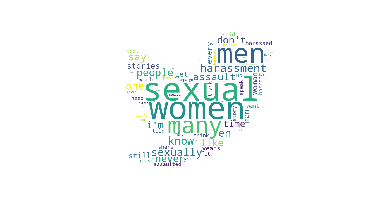
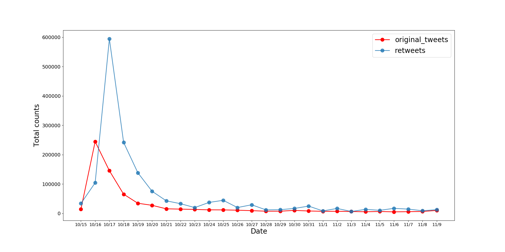
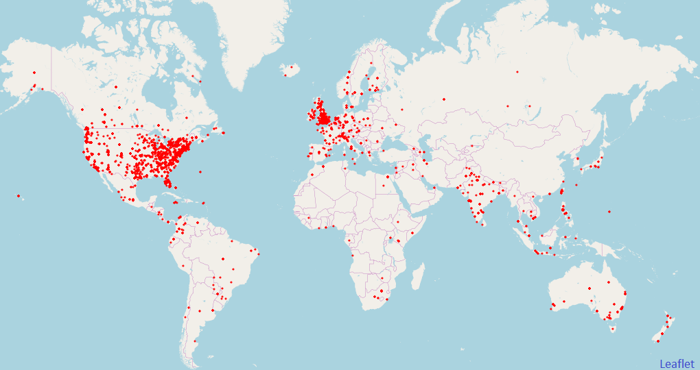
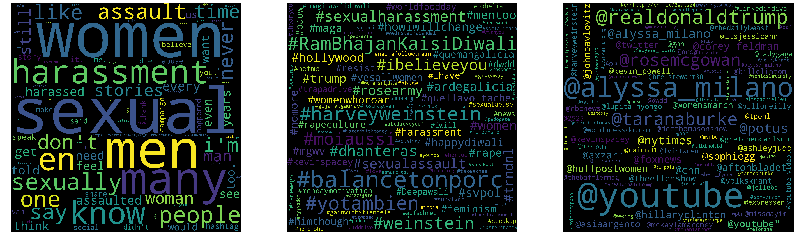

 #Metoo quickly became a worldwide movement
More than 700,000 original tweets with #metoo were scraped from Twitter from October 15 to November 9, 2017 using twitterscraper. Associated with this, ~1.6 million of retweets and >300,000 replies were counted during this time period.
Usernames information extracted from tweets were used to scrape user location, using requests and BeautifulSoup packages in python. Extracted locations were then processed by geocoder in geopy package to latitude and longitude coordinates, to map user location in the map below:
 High frequency words, hashtag, reffered IDs, and bigrams
Word clouds
Highly frequent Bigrams
- sexual, harassment: 10449
- sexual, assault: 9162
- sexually, harassed: 6462
- social, media: 4538
- sexually, assaulted: 3487
- harassed, assaulted: 3196
- sexual, abuse: 2772
- women, sexually: 2661
- every, woman: 2369
- harvey, weinstein: 1990
- many, times: 1931
- many, women: 1894
- sense, magnitude: 1781
- first, time: 1745
- stories, sexual: 1738
- share, stories: 1589
- believe, you: 1380
- years, ago: 1305
Change of hashtags through time
Most referred ID
Alyssa Milano: Hollywood actress who started #metoo movement on Twitter in 2017
#tweets: 3582 - #retweets: 9011
- Last week @Alyssa_Milano's #MeToo hashtag went viral. We all need to remember that a self admitted sexual predator is in the White House! pic.twitter.com/bfXltQkjTB - Oct 22
- If you think twitter activism doesn't work, you are sadly mistaken. Thank you @Alyssa_Milano for starting such a powerful movement. #MeToo https://twitter.com/Alyssa_Milano/status/926554563653517313\xa0\u2026 - Nov 3
- Who's the Boss' now? @Alyssa_Milano that's who. Thank you for standing against violence, #AlyssaMilano. #MeToo #WhosTheBoss #RapeSurvivor - Oct 19
- I'm very sure @Alyssa_Milano didn't know #MeToo was started by a black woman. Because the Black woman got no shine. *That's* the issue. - Oct 17
- When @RobinRoberts says It's a privilege to be a messenger, Isn't it? You look about to tear up.. #MeToo. Proud of you. @Alyssa_Milano. https://twitter.com/alyssa_milano/status/921386028534972421\xa0\u2026 - Oct 21
Tarana Burke: The woman who started the Metoo campaign in 2007
#tweets: 1308 - #retweets: 12752
- Shout out to my girl @taranaburke who has been advocating for assault victims & saying #MeToo for years. - Oct 16
- Calling all #Survivors & #Allies!#MeTooSurvivorsMarch 11/12 #Hollywood & Highland In alliance w #TakeBackTheWorkplace 10am-3pm Speakers from ALL areas of #SexualAssault See us on Facebook. Founder of #MeToo @TaranaBurke w #JaydaRasberry #AleeshaBarlow @AF3IRM @iv3s Moi & morepic.twitter.com/v0B594fFcl - Nov 8
- #MeToo has garnered over 800k tweets but mainstream press neglects to mention @TaranaBurke & I also shout out @ReignOfApril #NotOnMyWatch - Oct 17
- xchange & empathy with other survivors': @TaranaBurke, creator of #MeToo, joins @DavidShuster to discuss the hashtag's impactpic.twitter.com/v2THFBwrbv - Oct 20
- After major headlines surrounding sexual harassment allegations, #MeToo movement founder @TaranaBurke and @RepLawrence join @ThisWeekABC.pic.twitter.com/3eOTnANgnD - Oct 28
Donald Trump: US president
#tweets: 1525 - #retweets: 15710
- Poll. When thinking about Donald Trump what gives you the worst nightmares? #metoo #BREAKING #ImpeachTrump #NotMyPresident @realDonaldTrump - Nov 2
- Leaving @realDonaldTrump in office normalizes toxic masculinity, rape culture, and the oppression of women. This nonsense must end.\n\nhttp://www.cnn.com/2017/01/17/politics/betsy-devos-donald-trump-sexual-assault/index.html\xa0\u2026\n#MeToo #resist #weinstein #25thAmendment - Oct 16
- Dangerous, unfit, fraud, phony, sexual assaulter, incited violence, dangerous mental illness, same message as David Duke...\n\nThese are words used to describe @realDonaldTrump . \n\n#resist #ThursdayThoughts #MeToo\n#TrumpRussia #trump #magapic.twitter.com/0cZh5lnyjE - Oct 19
- Summer Zervos was paid $500,000 by filthy Democrats to fabricate her sexual harassment claim against @realDonaldTrump\n#MeToo #MAGA #TCOT #USpic.twitter.com/OeuFXmdgks - Oct 16
- Now is the time for all women abused or harassed by the SexualPredator-in-chief @realDonaldTrump to COME OUT and SPEAK UP. #MeToo PLEASE RT - Oct 26
Most retweeted tweets
- 995 times: I'm proud of women for sharing their stories on #MeToo but we need a shift about how we talk about sexual assault so i'm starting #HimThough - Oct 17
- 995 times: Since #Liberals love erasing symbols of "injustice" when are they going after the Hollywood sign? #HarveyWeinstein\#MeToo\#meToomen pic.twitter.com/BWxmpNhGkD - Oct 19
- 993 times: I'm grateful that my kids in school worked with law enforcement and private security to ensure campus safety, and work with me. #MeToo - Oct 16
- 992 times: Imagine if instead of #MeToo , abusers, finally too overwhelmed by their guilt & shame, came forward to say #ItWasMe & turned themselves in. - Oct 16
- 99 times: To all the women who are feeling a rush of nausea as another news cycle brings up traumas in your past: I'm with you & I support you & I love you #MeToo - Nov 9
- 99 times: A British politician admits he made his secretary buy sex toys as #MeToo hits Parliament http://wapo.st/2zPYzuo\xa0' - Oct 29
- 99 times: #MeToo End the Statutory limits for #SexualHarassment Assault and Rape! You'll see how massive this issue is! #CA - NO LIMITS IN 2018pic.twitter.com/eadTJfS3Lk - Oct 26
- 99 times: Audre Lorde To all the brave women speaking out this week: thank you for sharing your stories #MeToo pic.twitter.com/QRay6fqzeW - Oct 20
- 99 times: Riddle me this,if men are SO unaware of sexual harassment and assault,why are they SO fired up about their daughters not dating?? #MeToo - Oct 19
An anlysis on the #metoo movement and social perception on sexual harassment
Introduction
On October 15, actress Alyssa Milano posted a tweet with hashtag Me too, following the accusation of Harvey Weinstein on multiple sexual assault accounts by Hollywood actresses. Following that, the social media has been flooded with millions of #Metoo and stories by victims of sexual abuse all over the world (washingtonpost). The Harvey Weinstein incident also raised questions on why his victims did not report him any time sooner, even when they already gained career success. Does social perception on sexual assault changes through time and does it influence how victims respond when things happen to them? Does technology play a role in raising awareness of this pressing issue?
To answer these questions, I propose to use text analytic tools to explore the topics on how social perception on sexual harassment evolved through time using social media data including Twitter, Facebook, and news articles.
Broader Significances
Sexual assault is a serious issue that has been existing in all societies for a long time. In the US alone, every 1 in 6 women and every 1 in 33 men experienced attempted or completed rape in their lifetime (rainn.org). Insights gained from this project can be applied to raise social awareness and help build educational models and effective preventive tools.
Coverage of news related to sexual harassment since 1990
About 1400 articles were scraped using the New York Times API key with ‘sexual’ as search query.
Those articles were then parsed, extracted for specific information. These articles were grouped by year and normalized to total number of articles per year.
Assuming a linear rate of increase in published articles per day and 35% increase between 2010 and 2016, knowing the NYT publishes on average 170 articles per day in 2010 (theatlantic), rough total number of articles published by NYT per year was calculated for 1999-2017.
This plot shows sudden increase in news coverage on this topics from 2013-present. Within 2017, this October only has the most number of articles in the history.
Next step: To use topic modeling to examine changes in topics covered in news
Scrape twitter
Tweet scraping using twitterscraper, advantages of this over using twitter API is that it allows to go back pass 7 days. However this method does not provide detailed information of user such as user location like the API method.
#Run in command line in batches and combine files afterwards
twitterscraper %23metoo%20since%3A2017-10-15%20until%3A2017-11-9 -o "metoo_tweets.json"
Extract and plot geolocation
Scrape user location using BeautifulSoup and Requests
location.py
Convert location to latitude and longitude using geopy package
geocode.py
Plot scatter points on map using folium package
mapfolium.py
Frequency analyses of words, hashtag, referred ID, and term cooccurence
word_frequency.py